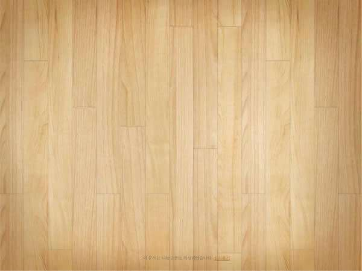
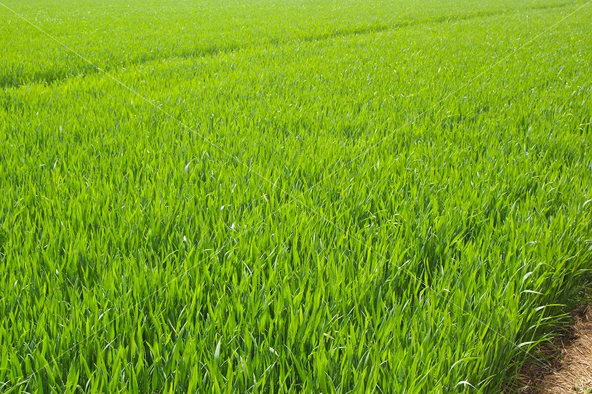

  	<div class="page-group">
     	<div class="page page-current" id='active1'>
        	<div class="editor">
          	 	<div class="back">
          	 	   <a class="back">返回</a>
          	 	 </div>
          	 	<div class="editor_text">编辑</div>
              	<div class="complete" onclick="activeComplete()">完成</div>
            </div>
            
         	<div class="cover_content">
		        <div class="editor_face">
		            <div class="my_img"></div>
		            <div class="title_text"><a onclick="titlePage()">点击设置标题</a></div>
		            <div class="editor_page"><a onclick="editorPage()">编辑封面</a></div>
		        </div>
	            <div class="add_content">
	           	   <div class="add_1">
	              	   <p class="add" onclick="addNew(this)">+</p>
	              </div>
			 </div>
			 <div class="editor_model">
				 <div id="modelActive">模版(<span>请选择模版</span>)
				 	<a class="pull-right cancelModel" style="color:#fff">取消</a>
				</div>
				 <ul>
					<li data-id='model1'>
						
					</li>
					<li data-id='model2'> 
						
					</li>
					<li data-id='model3'>
						
					</li>
					<li data-id='model4'>
						
					</li>
					<li data-id='model5'>
						
					</li>
					<li data-id='model6'>
						
					</li>
				 </ul>
			 </div>
          </div>
          <div class="loadding">加载中</div>
      </div>
      <script type="text/javascript">
      	  //获取本地图片的地址
		function uploadFileResult(objs){
		    if(objs==null||typeof(objs)=="undefined"||objs.length==0){

		    }else{ 	
		    	$(".imgContent").hide();
		        localImage = "data:image/jpeg;base64,"+objs[0].fileBase64;
		       //第一个添加图片 
		      if(imgIndex == -1){
		      	  $(".ModelContent").eq(0).before(textModel);
		          $(".ModelContent").eq(0).find(".textImage img").attr("src",localImage);
                  $(".ModelContent").eq(0).find(".textImage img").attr("data",objs[0].contentPath);
		          return;
		      }  
		      //0代表添加   
		      if(isImage == 0){
                  $(".ModelContent").eq(imgIndex-1).after(textModel);
                  $(".ModelContent").eq(imgIndex).find(".textImage img").attr("src",localImage);
                  $(".ModelContent").eq(imgIndex).find(".textImage img").attr("data",objs[0].contentPath);
		      }else{ 
		         $(".ModelContent").eq(imgIndex-1).find(".textImage img").attr("src",localImage);
		         $(".ModelContent").eq(imgIndex-1).find(".textImage img").attr("data",objs[0].contentPath);
		      };
		    };
		};
        
        //替换封面图片 http
        function titleArr(res){	
           $(".my_img img").attr("src",res);    
        };
        
        //替换文章的图片地址 http
        function textArr(res){      	
            //给是base64图片的移除imgSrc 类;
		      for(var i = 0 ; i < $(".ModelContent").length ; i++){
                 if($(".ModelContent").eq(i).find("img").attr("src").indexOf("../../images/addImg.png") != -1){
                 	  $(".ModelContent").eq(i).removeClass("imgSrc");       
                  }else{
                  	 $(".ModelContent").eq(i).addClass("imgSrc");   
                  }
		      }

        	for(var i = 0 ; i < $(".imgSrc").length ; i++){
                $(".imgSrc").eq(i).find(".textImage img").attr("src",res[i]);    
            };
        }


      </script>
    </div>
